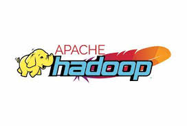
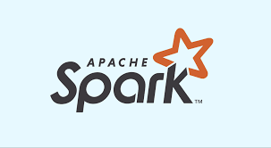

1. Pengantar
Untuk mengolah data dalam skala besar (Big Data), dibutuhkan kerangka
kerja (framework) khusus yang mampu menangani penyimpanan, pemrosesan,
dan analisis data secara efisien dan terdistribusi.
Framework Big Data ini memungkinkan pemrosesan data yang sangat cepat
meskipun datanya mencapai petabyte.
Framework adalah 'mesin' di balik pengolahan data besar — tanpa
framework yang tepat, analisis data tidak akan efisien.
2. Apache Hadoop

Hadoop adalah salah satu framework Big Data paling awal dan populer.
Dibuat oleh Apache Software Foundation, Hadoop menggunakan sistem
pemrosesan terdistribusi berbasis klaster komputer.
Komponen Utama Hadoop:
- HDFS (Hadoop Distributed File System) – sistem penyimpanan data terdistribusi.
- MapReduce – model pemrosesan paralel untuk membagi tugas ke banyak node.
- YARN (Yet Another Resource Negotiator) – manajemen sumber daya di klaster Hadoop.
Hadoop ideal untuk penyimpanan data masif dan pemrosesan batch (tidak
real-time).
(Sumber:
databricks.com)
3. Apache Spark

Spark adalah framework pemrosesan data cepat yang dikembangkan sebagai penyempurnaan dari MapReduce. Spark mendukung pemrosesan data secara in-memory (mengolah data langsung di memori), sehingga jauh lebih cepat dari Hadoop.
- Spark Core – inti engine untuk pemrosesan paralel.
- Spark SQL – query data dengan SQL.
- MLlib – library untuk machine learning.
- GraphX – analisis data berbentuk graf.
- Spark Streaming – pemrosesan data secara real-time.
Spark hingga 100x lebih cepat dari Hadoop MapReduce karena pengolahan
berbasis memori.
(Sumber:
sap.com)
4. Apache Kafka
Kafka adalah platform streaming yang digunakan untuk mengelola aliran data secara real-time dari berbagai sumber. Kafka sering digunakan bersamaan dengan Spark atau framework lain sebagai layer ingest (pengumpulan data).
- Real-time streaming
- Fault-tolerant (tahan gangguan)
- Digunakan oleh LinkedIn, Netflix, Uber, dll.
Kafka cocok untuk log server, event tracking, dan data
pipeline.
(Sumber:
techtarget.com)
5. Apache Flink
Flink adalah framework pemrosesan stream yang dirancang untuk aplikasi
real-time. Berbeda dari Spark yang awalnya batch-oriented, Flink memang
dibangun untuk streaming sejak awal.
Keunggulan Flink:
- Low latency (waktu tunda rendah)
- Event-time processing (memperhitungkan waktu kejadian)
- Pemrosesan stateful (menyimpan status antar event)
Flink ideal untuk aplikasi IoT, fraud detection, dan event-driven processing.
6. Apache Storm
Storm adalah framework untuk stream processing real-time, mirip dengan
Flink namun lebih ringan. Storm sering digunakan untuk pemrosesan data
dari sumber terus-menerus seperti sensor dan log server.
(Sumber:
storm.apache.org)
7. Framework Lainnya
Selain framework di atas, ada beberapa teknologi pendukung lainnya dalam ekosistem Big Data:
- Hive – query data di Hadoop dengan sintaks SQL
- Pig – scripting platform untuk analisis data besar
- Presto – query engine untuk data terdistribusi
- Cassandra – database NoSQL terdistribusi
- Elasticsearch – search engine cepat untuk data log dan teks
8. Perbandingan Framework Big Data
| Framework | Jenis | Keunggulan | Kelemahan |
|---|---|---|---|
| Hadoop | Batch | Skalabilitas tinggi | Lambat (disk-based) |
| Spark | Batch & Streaming | Cepat (in-memory) | Butuh RAM besar |
| Kafka | Streaming | Real-time, durable | Bukan untuk analisis langsung |
| Flink | Streaming | Low latency, stateful | Ekosistem lebih kecil |
| Storm | Streaming | Mudah di-setup | Fitur tidak selengkap Flink |
9. Kesimpulan
Pemilihan framework Big Data yang tepat sangat bergantung pada kebutuhan
proyek. Jika Anda butuh pemrosesan batch skala besar, Hadoop atau Spark
bisa jadi pilihan. Jika fokus pada real-time streaming, Kafka dan Flink
lebih cocok.
Tidak ada satu framework terbaik — yang ada adalah kombinasi
framework yang tepat untuk kebutuhan Anda.